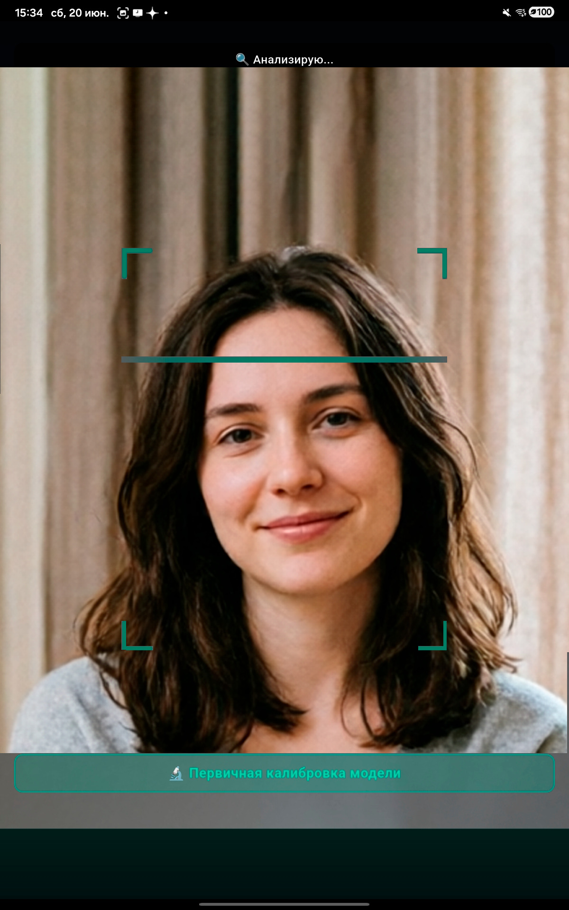
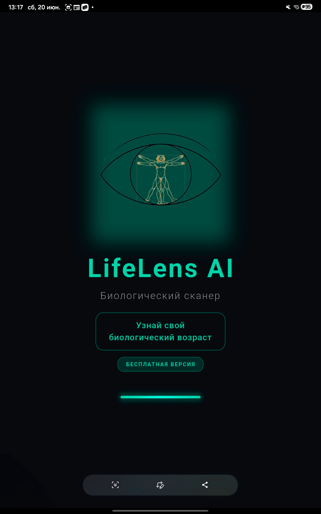
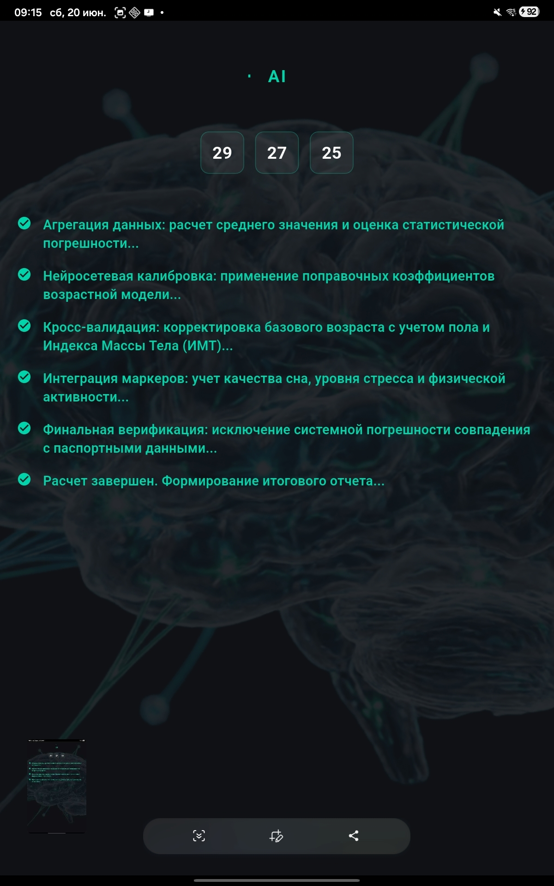
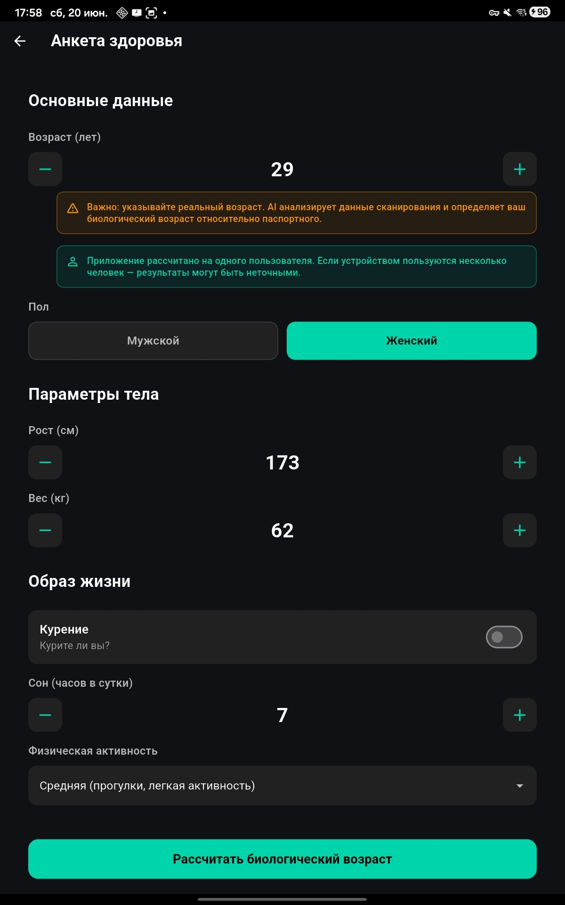
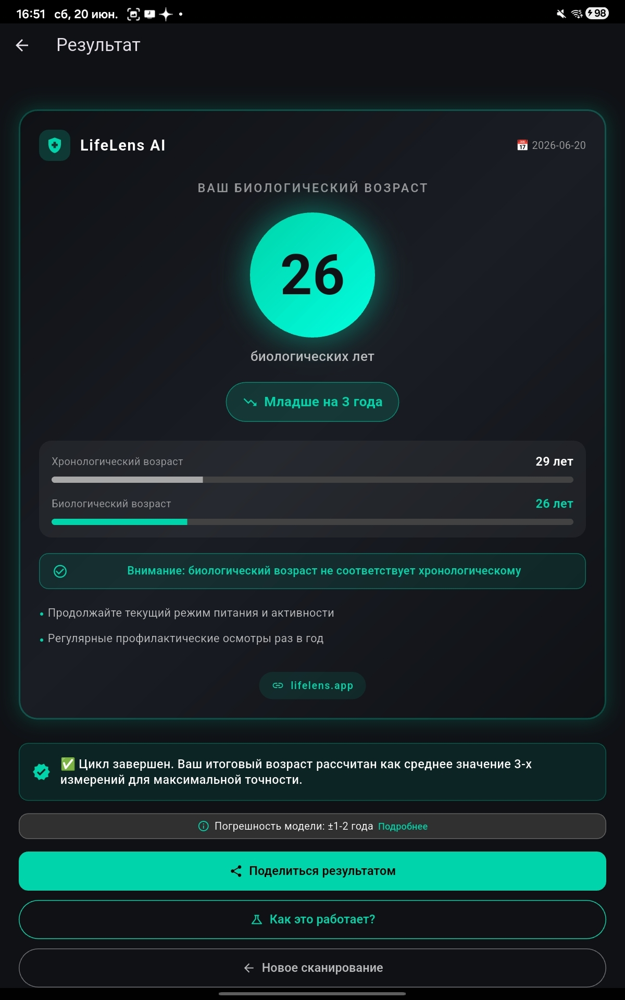

LifeLens AI
Биологический возраст по фото лица
Забрать в RuStoreСкан вместо анализов
Три замера за день, четыре дня подряд — модель калибруется под тебя
Точность ±1–2 года
Эпигенетические часы плюс нейросетевая калибровка по твоим данным
Образ жизни в уравнении
Сон, активность, курение, ИМТ — всё влияет на итоговую цифру
Динамика молодости
Повторяй сканы и смотри, как биологический возраст отстаёт от паспортного





Хроники создания мира — скоро